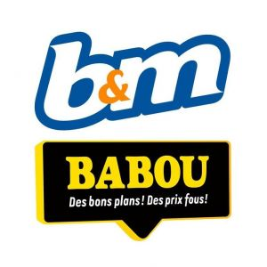
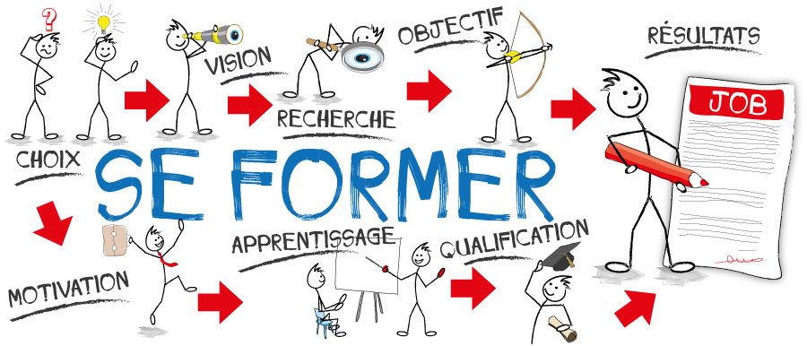

Durant mon cursus scolaire, en 3ème j'ai du effectuer un stage en entreprise,
une expérience qui a été particulièrement enrichissante pour moi.
Ce stage m'as permis de découvrir le monde professionnel.
J'ai choisi de réaliser mon stage au sein de Babou qui est maintenant renommée B&M.
C'était une occasion exceptionnelle de m'immerger dans un environnement de travail réel
et d'apprendre de nouvelles compétences.
Pendant cette période, qui a duré une semaine, j'ai travaillée aux côtés de professionnels
expérimentés qui m'ont guidé tout au long de ce stage.
Ce stage m'a permis de développer des compétences en communication et en autonomie.
Grâce à cette expérience enrichissante, j'ai pu valider mon année de 3ème, même si elle
a été marquée par la COVID-19.

Lien de B&M
Comme vous l'avez remarqué, j'ai eu moins d'opportunités de stage ou d'emploi
jusqu'à présent, bien que l'idée d'immersion en entreprise me passionne.
La formation en Métiers du Multimédia et de l'Internet (MMI) sera donc un atout
précieux pour m'aider à franchir le pas vers le monde professionnel.
Cette formation me permettra d'acquérir les compétences essentielles et les connaissances
nécessaires pour préparer mon entrée sur le marché du travail.
